Highlights of Important Activities During the 2025–2026 Year
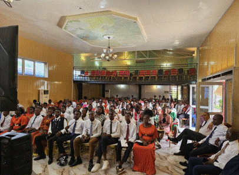
22 February 2026, a district‑wide activity bringing together all young adults
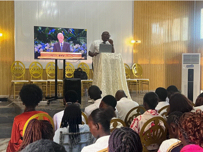
Elder Haboko, Area Seventy, responding to young adults questions
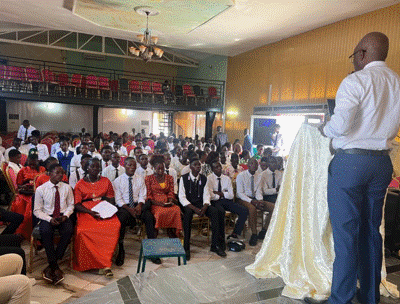
President Bondo, district president, speaking to YSA during the devotional
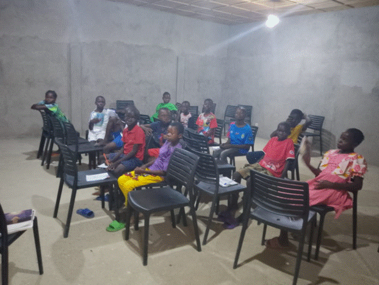
Seminary students'class visit
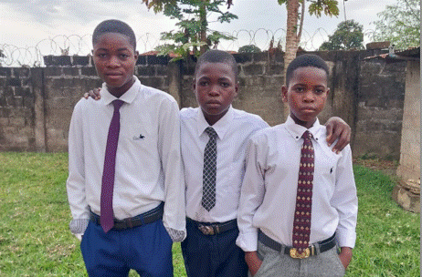
A young man, Waba Blaise in the middle, stood out through his perseverance and unwavering faith
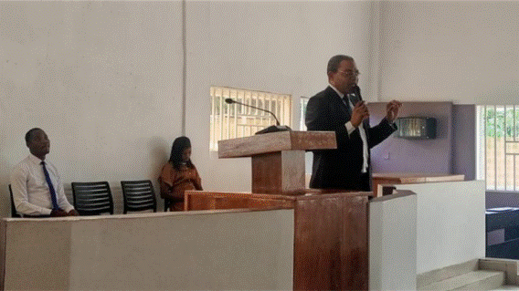
activity held on March 15, 2026, during which participants watched the devotional broadcast delivered by President Dallin H. Oaks
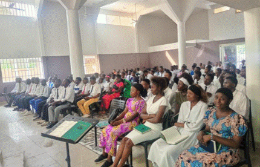
This YSA devotional in Kikwit provided a meaningful opportunity for learning.
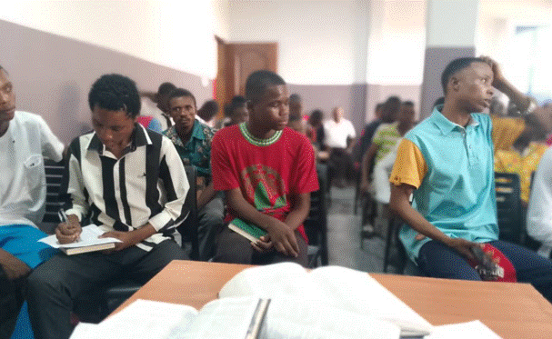
Young Single Adults visit during an institute of religion class
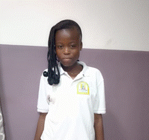
Sister Yoyayi Natacha, testified that Seminary had changed not only her life but also the lives of his parents.
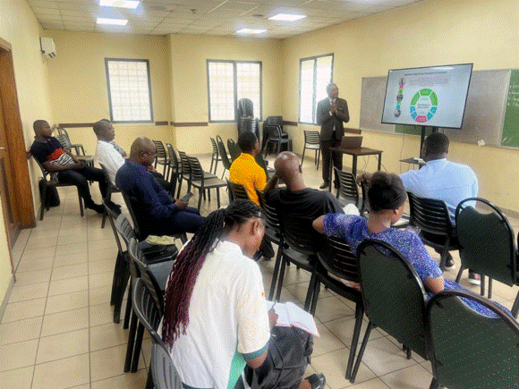
Building the capability of stake called teachers in Ngaba stake
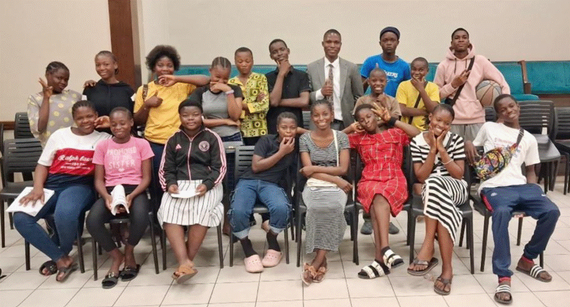
Seminary students class visit in Kinshasa stake
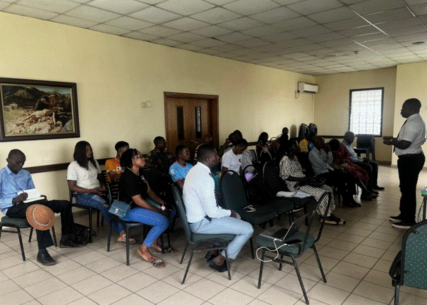
Brother Lumu, stake supervisor, addressing teachers after an inservice training